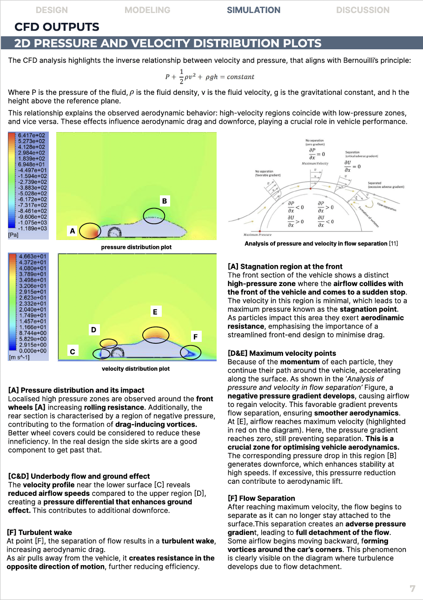
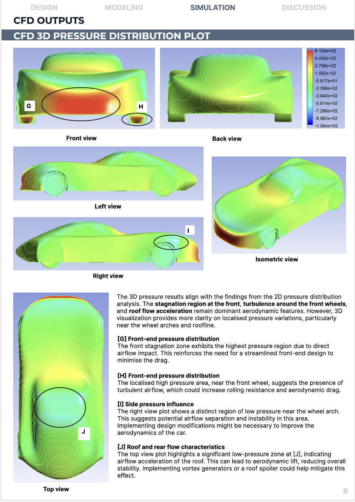
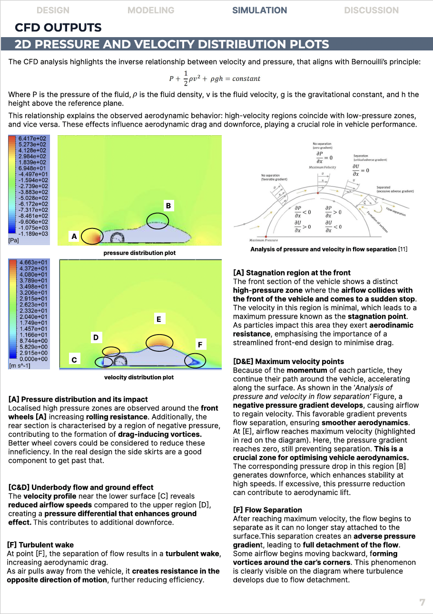
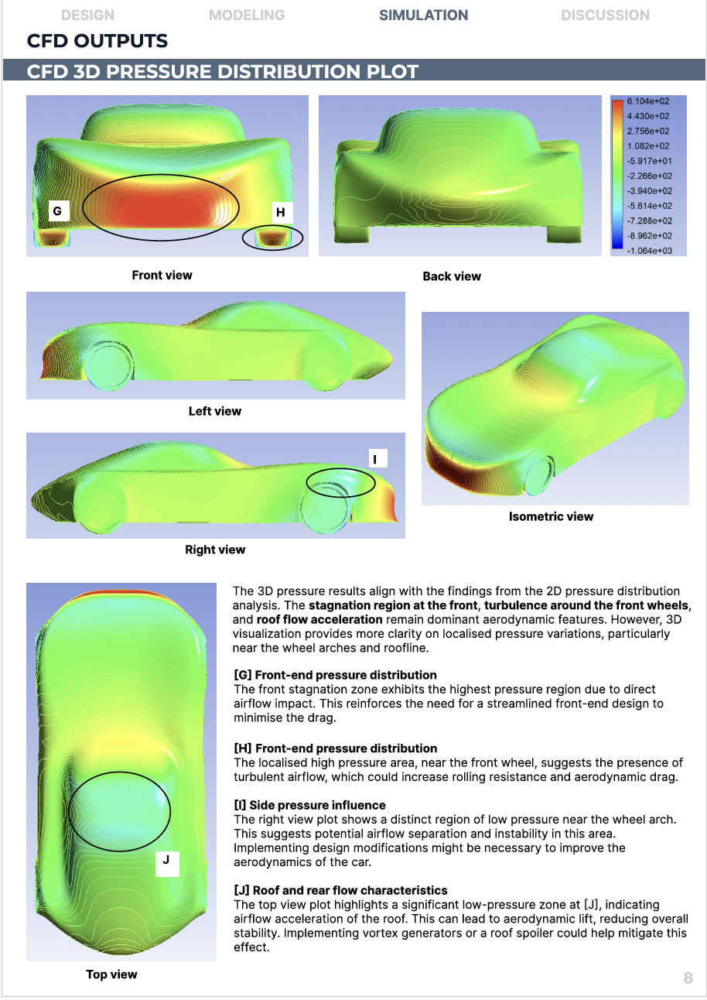


 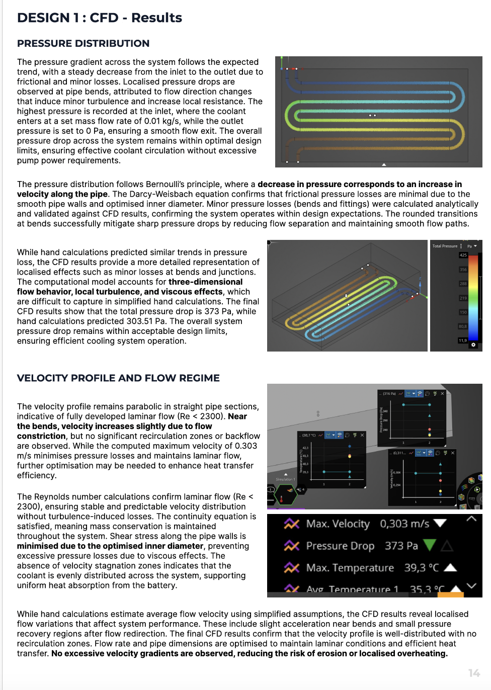
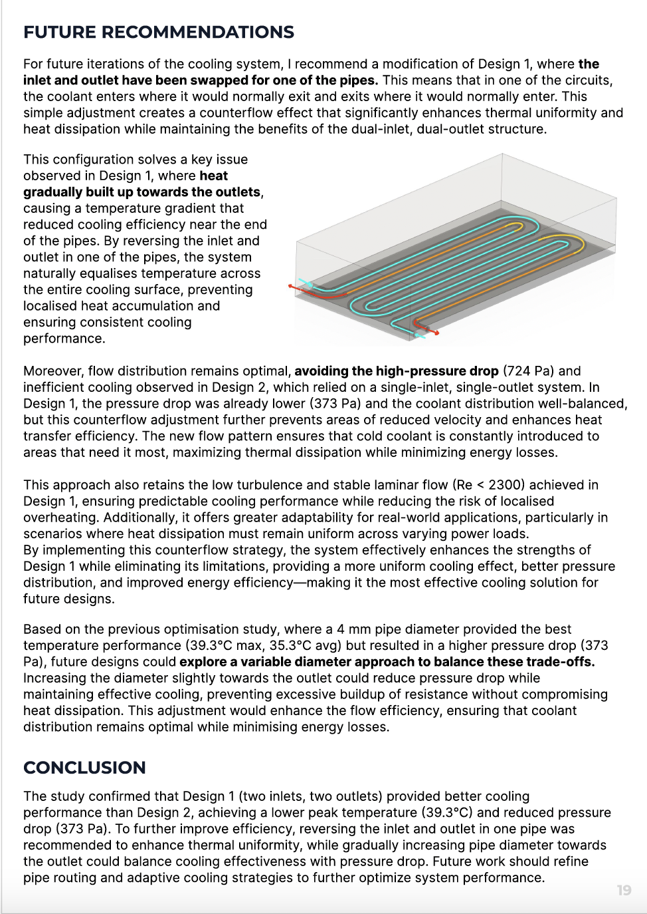
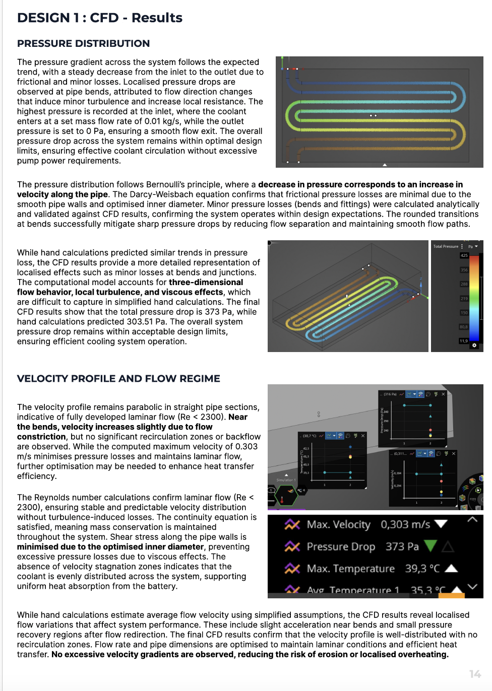
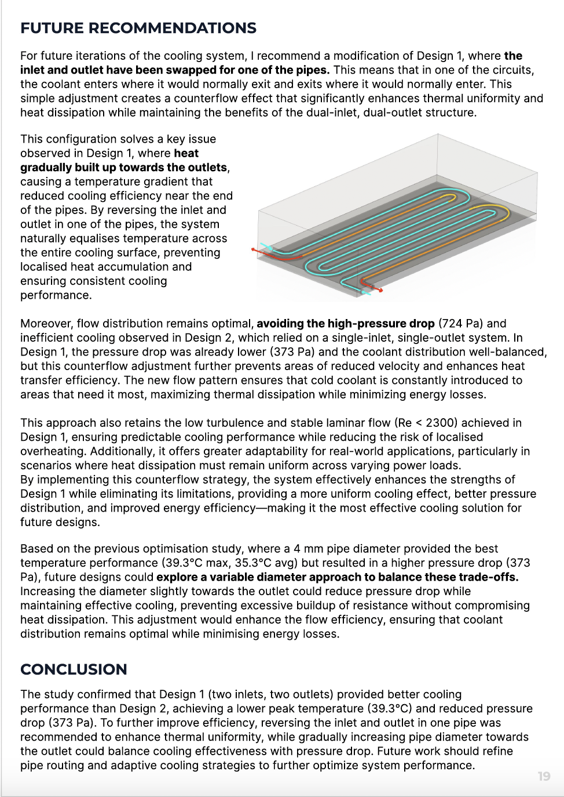
Thermofluids
As part of the Thermofluids module in second year, I undertook a two-part design challenge combining aerodynamic design, fluid dynamics, and thermal engineering. The task: to conceptualize a modern vehicle archetype and develop a liquid-cooled thermal management system for its battery — all grounded in real-world simulations and experimental validation.
In the first phase, I redesigned the iconic Mercedes-Benz 300 SL with a focus on aerodynamic efficiency. Using iterative 3D CAD modeling and CFD analysis in Ansys, I identified and corrected key inefficiencies in the original shape — from flow separation and lift-inducing rooflines to drag-heavy wheel arches. My final design incorporated modern aerodynamic features like diffusers, side skirts, and an S-duct.
In the second phase, we 3D printed a scale model of the redesigned car for wind tunnel testing. I validated my CFD predictions through physical trials, using flow visualization and force measurements to compare drag and lift coefficients. This comparison highlighted the importance of scaling laws, Reynolds number effects, and the physical nuances missed by idealized simulations.
Parallel to this, I designed a battery cooling system using copper pipelines and a high-conductivity cooling plate. I ran hand calculations and CFD simulations to optimize flow velocity, pressure drop, and thermal performance. The final system reduced hotspot risks and achieved uniform heat distribution, with design decisions backed by thermodynamic theory and real-world constraints.
This project sharpened my skills in fluid mechanics, simulation, physical testing, and design iteration — but more importantly, it taught me how to integrate digital and physical methods to engineer for performance, efficiency, and reliability.
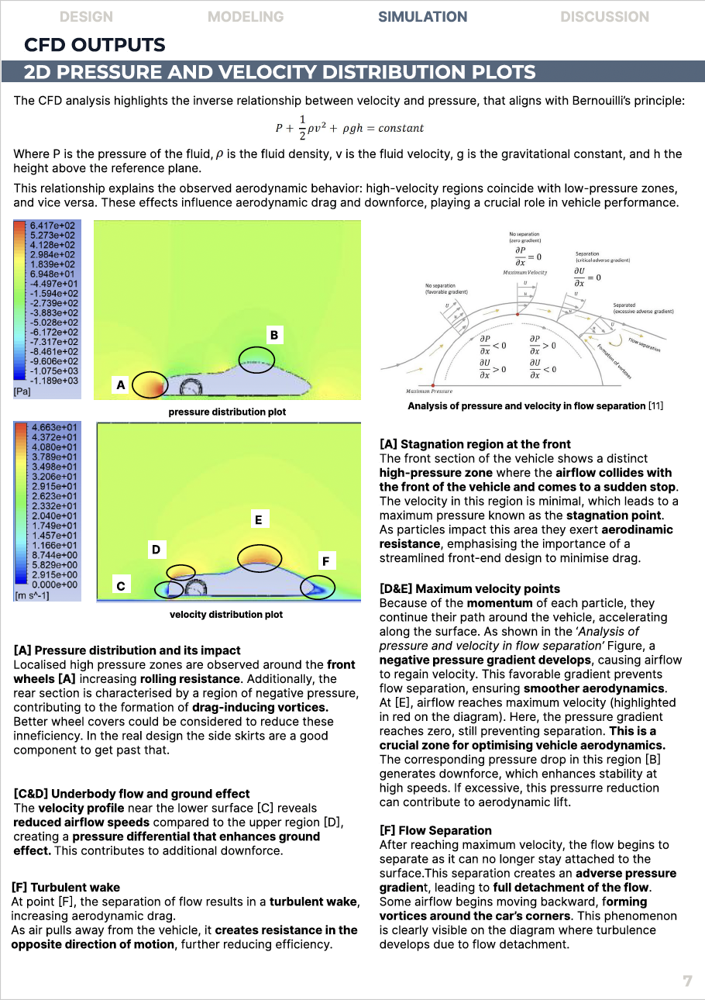
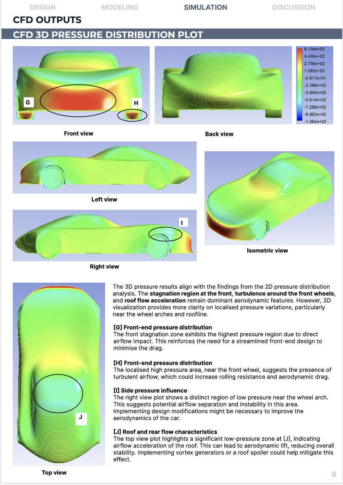
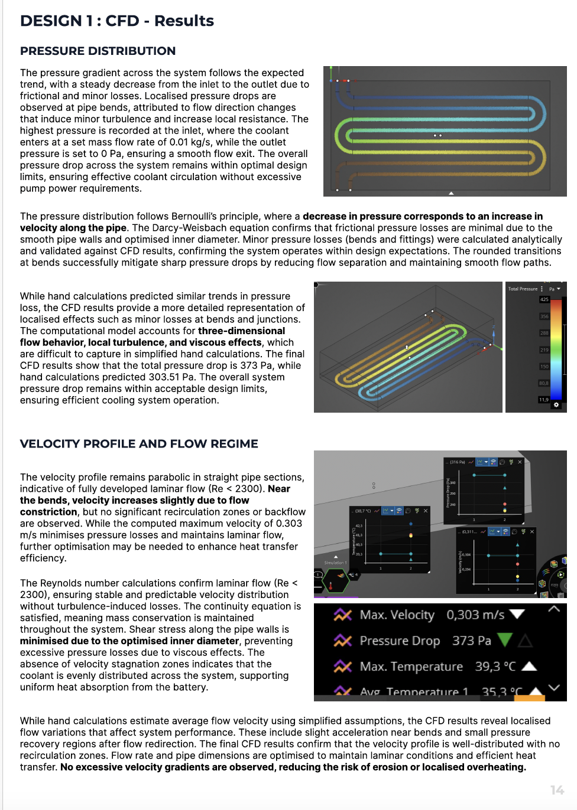
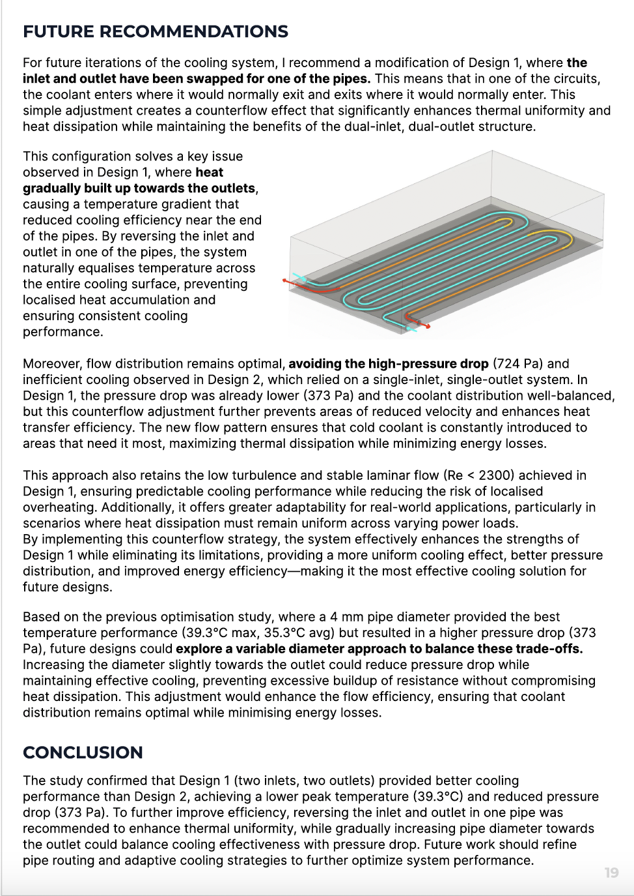